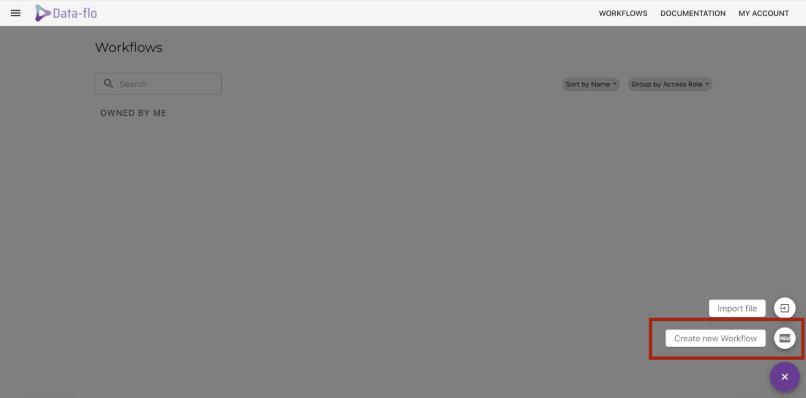
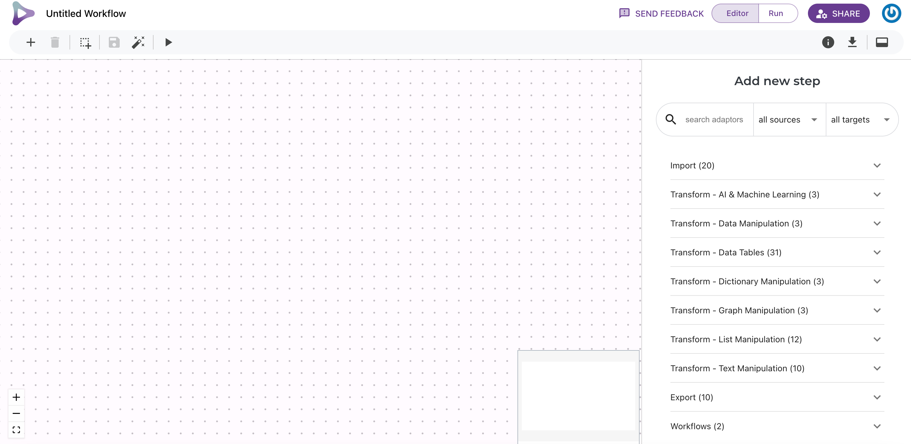
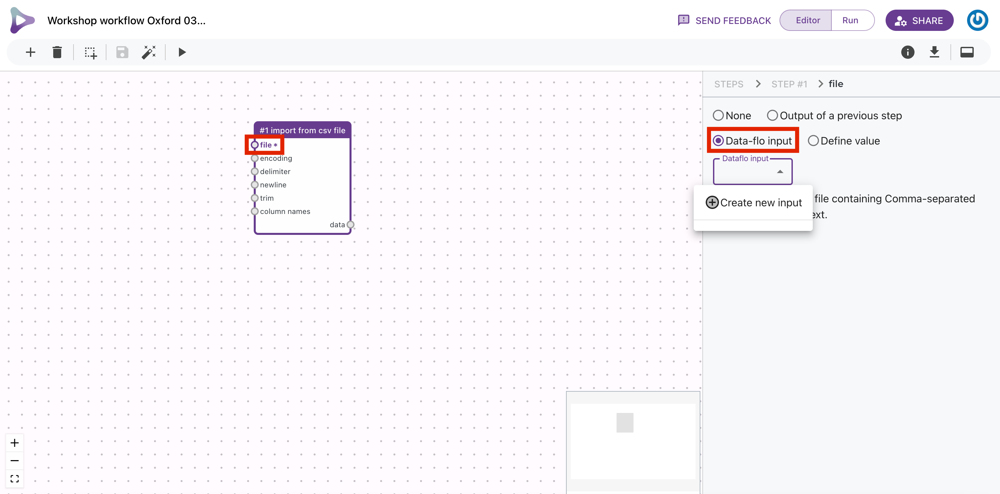
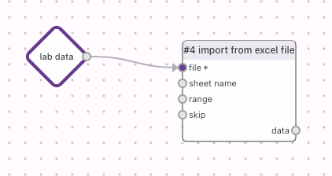
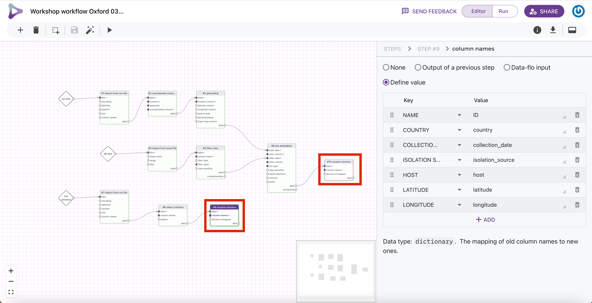
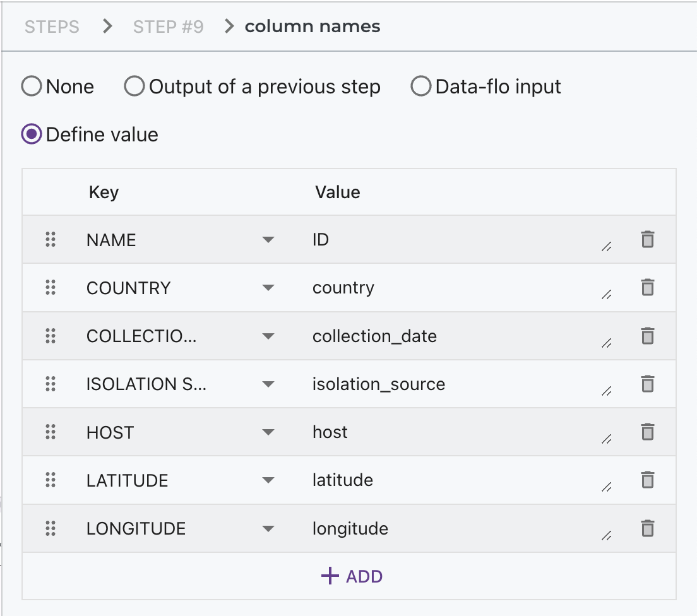
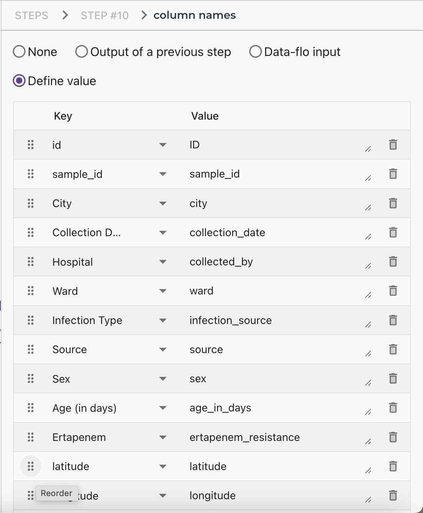
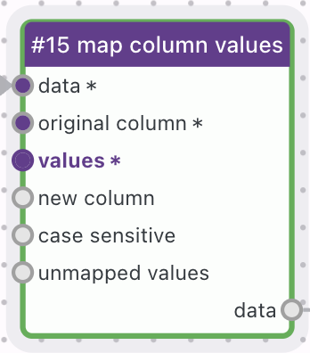
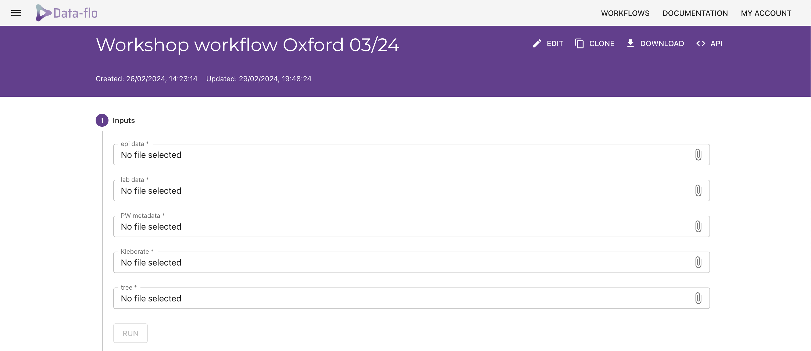

SESSION 5 - Data integration with Data-flo
Module Leads: Julio Diaz Caballero, Natacha Couto, Georgina Lewis-Woodhouse, Emmanuelle Kumaran, Nabil Fareed-Alikhan, Sophia David, Monica Abrudan
based on the exercise developed by Silvia Argimon
Table of contents
Introduction
Data-flo (https://next.data-flo.io/) is a system for customised integration and manipulation of diverse data via a simple drag and drop interface.**
For Data-flo documentation, go to https://docs.data-flo.io/introduction/readme.
Data-flo can easily combine epidemiological data, genomic data, laboratory data, and various metadata from disparate sources (i.e., different data systems) and formats.
Data-flo provides a visual method to design a reusable workflows to integrate, clean, and manipulate data in a multitude of ways, eliminating the need for continuous manual intervention (e.g., coding, formatting, spreadsheet formulas, manual copy-pasting).
Data-flo workflows are combinations of ready-to-use data adaptors that can be tailored, modularised and shared for reuse and reproducibility. Once a Data-flo workflow has been created, it can be run anytime, by anyone with access, to enable push-button data extraction and transformation. This saves significant time by removing the bulk of the manual repetitive workflows that require multiple sequential or tedious steps, enabling practitioners to focus on analysis and interpretation.
Objectives
At the end of this session the participants will be able to:
- Build a data transformation workflow by combining ready-to-use data adaptors suited to the exercise
- Acquire a Microreact link that combines all the data files from the exercise using Data-flo
Data integration with Data-flo
https://data-flo.io/
Note: you need to sign-up for Data-flo and Microreact. See instructions in the Resources section. Creating your own account will allow you to manage and edit your projects.
A cgSNP tree was generated through Pathogenwatch (tree.nwk). Contextual genomes present in Pathogenwatch (Jan 2020-now) were also included in the tree inference and their associated data added to the epi_data.csv file.
The user now has the information needed for the investigation in the following formats:
epi_data.csvEpi data from 3 clinical cases, 6 carriers and 11 environmental sampleslab_results.xlsxCulture and AST resultsPW_metadata.csvmetadata results from Pathogenwatch- PW_Kleborate.csv Kleborate file from Pathogenwatch
tree.nwkcgSNP tree of 7 Kpn genomes
The files are located in this link.
We will create a Data-flo workflow to consolidate the files and send them to Microreact for visualisation. Follow the steps below:
1) Start a new workflow: on the Workflows page click the purple on the button right of the screen and select “Create new Workflow”

2) This is your canvas. On the left you have the canvas on which you will build your workflow. On the right panel you have the list of all the adaptors you can use to build your Workflow.

It is good practice to start by naming your workflow. To do so click on the “Untitled Workflow” text on the top left.
3) To import the Epidemiology data, which is in a CSV file, you can use the import from csv file adaptor. You can find it on the left panel by going through the list of adaptors and selecting the appropriate option. Alternatively, you can use the search feature on the top of the adaptor panel to quickly find the adaptor you need.
Once you have found the adaptor, click on the file input and select “Data-flo input” on the right panel. This option allows the user to add the CSV file when they run the workflow on the Run page.
A drop down menu will appear, select “create new input”

4) Click on the input data diamond. You can rename the input data name and add a short description to give the user more context as to which file to add. You can also add the CSV to the test run value, this will allow you to test your workflow with a data file as you build it. You can then click the “play” button on the top left of the screen to test run your workflow. It is good practice to do this, each time you add a new adaptor. If the adapter turns red, something has gone wrong with the adaptor setup.

Add latitude and longitudes to the Epidemiological data:
5) Because the hospital name is not specific, we can use the concatenate column, to merge the City and Hospital columns. Firstly, select concatenate column from the list of adaptors. Then, connect the data output from the “import from csv file” to the data input in the “concatenate column” adaptor. Click on the “columns” option and select “Define value”. Add the names of the two columns you want to merge. In the separator input option on the adaptor, you can also add a separator (for example, a comma) to separate the values from the two concatenated columns. Finally, in the concatenated column input option, add the name of the new column which will contain the concatenated values.

6) Add the geocoding adaptor to your workflow. Under the location column input option, enter your concatenated column. This adaptor will create columns named latitude and longitude by default. However, you can choose to name these columns differently by using the latitude column and longitude column input options.

7) Import the lab data into your Workflow. You can do this using the import from excel file adaptor. Follow the same instruction for setting up this adaptor as 3) and 4)

8) The laboratory data includes samples that are both culture positive and negative. However, for our current workflow, we are only interested in the culture positive samples. To filter out the culture negative samples, we can use the filter rows adaptor. First, we need to specify the name of the column we want to search, which in this case is the culture column. Next, we need to specify the value to be filtered on, for example, Klebsiella pneumoniae. After filtering, we will get two output datatables. One will contain all the rows that include Klebsiella pneumoniae, while the other will contain all the remaining rows.

9)To combine the lab data and epidemiology data tables, you can use the join datatables adaptor. First, add the two datatables to the main and other data inputs. Then, specify which columns from each datatable should be used to perform the join. You can choose the type of join you want to perform - in this case, we want an inner join which will only keep the rows that have matching values in both tables. For more information on different types of joins, you can visit the following URL: https://www.datasciencemadesimple.com/join-in-r-merge-in-r/.

10) Import the Pathogenwatch metadata using steps 3) and 4)
11) The metadata file contains several columns that are either blank or not useful. To select only the necessary columns, you can use the select columns adaptor. In the “column names” input, you need to define a list of columns that you want to keep in the file. In this case, you will want to keep the following columns: Name, Country, Collection date, Collected by, Isolation source, Host, Latitude, and Longitude. Note: you can also use the remove columns adaptor, in which case you would need to define the columns you wish to remove.

12) Rename the metadata and joined lab and epi datatables in order to make them match. To do so, you can use the rename columns adaptor.

Renaming the Metadata datatable: under the column names input, rename all the columns according to the table below.

Renaming the joined lab/epi datatable: rename the columns according to the table below. In addition, under the discard unmapped, click the define value and select TRUE, this will discard any columns that were not renamed.

13) Back to the PW metadata, you may have observed that the rows associated with the samples from University College Hospital are empty. These rows can be removed as the information for them is present in the joined lab/epi datatable. To do this, you can use the filter rows adaptor. Select the “collection_date” under the column name input and click on “define” under the filter type input. Then choose the “is-blank” option. Note: the data you want will be in the complementary output and not the data output

14) Add a country column to the joined lab/epi datatable using the add column adaptor. Under the value input add Nigeria.

15) Add a “host” column to the joined lab/epi datatable using the map column values adaptor. Map the values in the “source” column to either “Human” or “Environmental”.

16) Append both datatables together using the “append datatables” adaptor

17) Import the Kleborate CSV using steps 3) and 4)
18) Join the Kleborate datatable to the other datatable using the join datatable adaptor.
19) We now want to export this data to Microreact to visualise it. Before we do this. We need to convert this datatable to CSV form which can be done using the export to CSV file adaptor.

20) Select the export to microreact adaptor.
Link your CSV output of the previous adaptor to the data file input of this adaptor
Under the tree file input, add a new data-flo output for your tree file.

On a different browser tab, get your microreact API access token at https://microreact.org/my-account/settings (you must already have created your microreact account).
Go to the My account tab at the top of your Microreact page and then to the Account Settings. Copy your API token.

Go back to your Data-flo workflow and click on *access token and add your API token as a defined value.
In the outputs of the export to microreact click on URL and check the “Use as Workflow Output”
Run your workflow
On the top right corner of your canvas, select the Run option.
To run the workflow upload the files named lab_results.xlsx, tree.nwk, epi_data.csv, and mlst-Pasteur.csv.

Click on Run. The Outputs box now shows the url of a Microreact project created by data-flo.

The materials provided in this repository are FREE to use. This work is licensed under a Creative Commons Attribution 4.0 International License. Reuse is encouraged with acknowledgement.